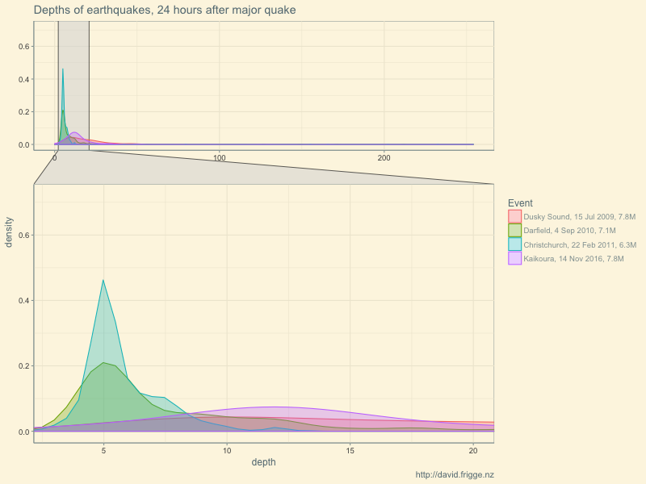

After my first foray into earthquake data I poked around a bit more but didn’t produce anything hugely revelatory. I thought I’d use the data though as an excuse to try out a couple of new things: zooming facets in ggplot2, and creating maps with Plotly.
If you are interested in more earthquake insights specifically, two of my favourite visualisations on the matter have been:
It was interesting to look at the depths of the recent earthquakes, but it did leave me wondering if these were typical. Are NZ quakes typically distributed like this? Were the last canterbury quakes this shallow?
I plotted the distributions of the first 24 hours of quakes following four major events in recent years. It was interesting to see that there was some difference between them. Frustratingly, most of the quakes were relatively shallow, but there were a few very deep ones. Do you leave in all the data to show the full range but make the detail hard to see, or crop the tail to tradeoff against better visibility of the peaks? Enter facet_zoom from the new ggforce package, which allows us to see the whole graph, but also zoom in on the detail of interest.
library(readr)
library(purrr)
library(dplyr)
library(magrittr)
library(forcats)
library(ggplot2)
library(ggthemes)
library(ggforce)
list(
#"http://quakesearch.geonet.org.nz/csv?bbox=163.60840,-49.18170,182.98828,-32.28713&minmag=2&startdate=2009-07-15T9:00:00&enddate=2009-07-16T9:00:00",
"data/earthquakes-2009-07-15.csv",
#"http://quakesearch.geonet.org.nz/csv?bbox=163.60840,-49.18170,182.98828,-32.28713&minmag=2&startdate=2010-09-03T16:00:00&enddate=2010-09-04T16:00:00",
"data/earthquakes-2010-09-04.csv",
#"http://quakesearch.geonet.org.nz/csv?bbox=163.60840,-49.18170,182.98828,-32.28713&minmag=2&startdate=2011-02-21T23:00:00&enddate=2011-02-22T23:00:00",
"data/earthquakes-2011-02-22.csv",
#"http://quakesearch.geonet.org.nz/csv?bbox=163.60840,-49.18170,182.98828,-32.28713&minmag=2&startdate=2016-11-13T11:00:00&enddate=2016-11-14T11:00:00"
"data/earthquakes-2016-11-14.csv"
) %>%
map(read_csv) %>%
map(filter, eventtype == "earthquake" | is.na(eventtype)) %>%
map(select, depth) %>%
map2_df(
list(
"Dusky Sound, 15 Jul 2009, 7.8M",
"Darfield, 4 Sep 2010, 7.1M",
"Christchurch, 22 Feb 2011, 6.3M",
"Kaikoura, 14 Nov 2016, 7.8M"
),
function(df, ch) {
df %>%
mutate(Event = ch)
}
) ->
eq_24h
png("images/eqnz_depth_comparison.png", width = 800, height = 600)
ggplot(eq_24h %>% mutate(Event = fct_inorder(Event)),
aes(x = depth, colour = Event, fill = Event)) +
geom_density(alpha = 0.3) +
facet_zoom(x = depth <= 20 & depth >= 3) +
theme_solarized() +
labs(title = "Depths of earthquakes, 24 hours after major quake",
caption = "http://david.frigge.nz")
dev.off()
Notes on the code (display with the “Code” toggle above):
facet_zoom is fairly straightforward, which is nice.I’ve “always” known that Wellington was the big risk for quakes, and has had some big ones in the past. And I grew up in Hawkes Bay with the communal memory of the 1931 quake there. But have the big quakes been only in these regions or have they been across the whole country?
I looked at Geonet for all recorded quakes over 7 magnitude; it turns out there have been 30 of them. As you can see below, the quakes span the length of the country, on what looks like a diagonal line, highlighting New Zealand’s position as the meeting place of the Pacific and Australian Plates. Northland looks like the place to be if you’re super scared of earthquakes. Just keep your fingers crossed that Auckland’s volcanoes don’t explode!
I’ve plotted the 30 big quakes, coloured by date. For reference, especially for non-kiwis, I’ve also plotted the main towns and cities, scraping this data from Wikipedia.
library(readr)
library(dplyr)
library(plotly)
library(lubridate)
big_eq <-
read_csv("data/big_nz_quakes.csv") %>%
# read_csv("http://quakesearch.geonet.org.nz/csv?bbox=162.99316,-49.66763,182.37305,-32.91649&minmag=7&startdate=1800-01-01T0:00:00&enddate=2016-12-31T23:00:00") %>%
mutate(origintime = with_tz(origintime, "Pacific/Auckland"),
magnitude = round(magnitude, 1),
depth = round(depth, 0),
Year = year(origintime))
nzua <- read_tsv("data/nz_urban_areas.tsv", skip = 1, col_types = "icccnn")
plot_geo(big_eq,
lat = ~latitude, lon = ~longitude) %>%
add_markers(text = ~paste0(format(origintime, "%l:%M%p, %A %e %B %Y"), "<br />",
magnitude, " ", magnitudetype, ", ", depth, "km deep"),
size = I(10),
color = ~Year,
name = "Earthquakes",
hoverinfo = "text") %>%
add_markers(data = nzua %>% rename(latitude = Latitude, longitude = Longitude),
size = I(5),
color = I("black"),
text = ~paste0(Name, " Urban Area <br /> Population ", Population),
hoverinfo = "text",
name = "Urban areas",
showlegend = T) %>%
layout(title = "Big quakes (>7M) in New Zealand",
geo = list(scope = "world",
showland = TRUE,
resolution = 50,
projection = list(
type = "conic conformal",
rotation = list(lon = 172)
),
lonaxis = list(range = c(156,190)),
lataxis = list(range = c(-50,-33))))Notes on the code (display with the “Code” toggle above):
with_tz allows easy conversion from UTC. I had thought that stamp might allow me easy display formatting, but I couldn’t get it to work sensibly so reverted to format.fig.height option, and the height option in Plotly’s layout function made the figure area bigger, but not the box with the map in.On the whole, I’m not entirely happy with this. If I’d had more time I’m sure I would have thought more about the design, and hopefully solved all of the technical issues I ran in to. It was interesting to try out Plotly’s mapping capabilities, but next time I think I’ll reach for leaflet first.